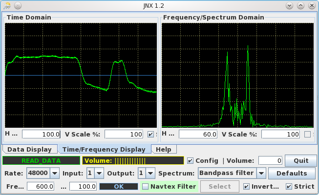
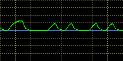
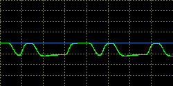
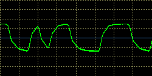
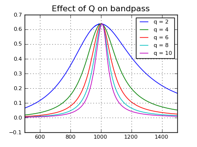
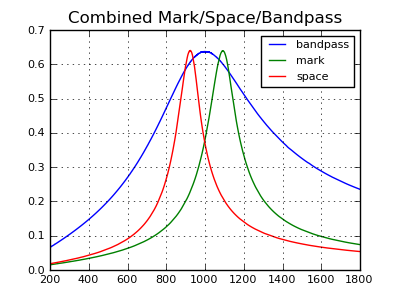
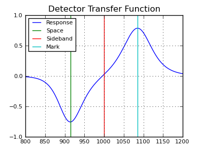
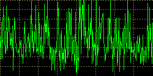
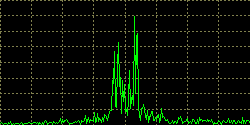
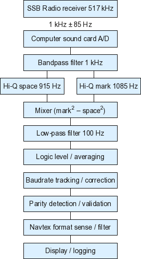

JNX is released under the GPL: http://www.gnu.org/licenses/gpl.html
Please visit http://www.arachnoid.com/JNX for more documentation and to acquire the latest version of JNX.
NOTE: For formatting reasons, users may want to temporarily make the JNX program frame larger to properly read these instructions.
Figure 1: JNX text display
Figure 2: JNX time and spectrum display
OperationFirst, to avoid confusion, I have another program named JWX that receives shortwave signals from a computer's sound card and creates graphic weather charts. It's closely related, but not the same. This program, JNX, receives shortwave radio signals from a computer's sound card and creates Navtex weather reports in text form. I hope that clears it up. :)
I travel by boat quite a lot, mostly in Alaska where knowing the upcoming weather is simultaneously important and difficult. I recently realized that laptop computers have evolved to the point that they can serve as rather sophisticated signal processors — all one need do is feed them audio from a receiver tuned to a source of information like a coded weather report, and the computer will decode the signal and display the result.
My earlier project JWX is completely successful at receiving weather charts, so I decided to try to design a Navtex decoder based on the same general principles. Navtex is a bit more difficult to decode than weatherfax signals, but it produces more useful meteorological data in an easily interpretable form.
To use JNX, you only need a shortwave radio, a computer, and an audio patch cord to connect the radio to your computer's sound card. That's all — nothing else is needed.
Technical SectionIf the explanations in this section either make no sense or seem too elementary, please read the technical description farther down the page. It's a longer read and it explains things in more depth. But if you want a painless, terse description that will get you from nothing to Navtex in the fewest steps, this section is for you.
Needed:
- A shortwave radio with single-sideband reception ability, able to tune to 518 KHz — that's below the AM broadcast band. Most ordinary radios cannot tune there. The better the radio and antenna, the better the results.
- An audio patch cord to connect your radio to your computer. This can be a bit tricky if your radio isn't properly grounded or if it doesn't have a proper outside antenna, nice and long, well-separated from electrically noisy things ... like computers.
- Your laptop or desktop computer with a sound card. Connect the audio patch cord to the computer's line-input jack if that exists, otherwise the microphone input will have to do. Be aware that, for optimal performance, you will have to carefully limit input levels if you use a microphone input jack.
Startup
There are many Navtex transmitters and frequencies, more so as time passes, but the canonical Navtex system uses 518 kHz (or 490 kHz and possibly also 4209.5 kHz in some parts of the world). We'll start with the default frequency. Here is a basic startup procedure:
- Tune your radio to 517 kHz — no, that's not a mistake, we need to create a 1 kHz sideband signal, so we tune 1 kHz away from the desired frequency.
- Select your radio's upper sideband mode. If you radio doesn't have such an option, you might want to take a short break, run down the street, and acquire a better radio.
- If your radio has selectable bandwidth features, use them — for Navtex reception, you only need to receive a small sideband region between about 900 and 1100 Hz, and the more interference rejection your radio can provide, the better. JNX includes a spectrum display to help you optimize the sideband filtering.
- Connect the radio to your computer. If you have a recording jack on your radio, one that doesn't mute the speaker audio, use it — it's more convenient to use a recording jack and keep the radio's speaker operational.
- If you have no other option, connect the audio patch cord to the radio's headphone output. This will generally mute the radio's speaker output. JNX includes a monitor output to deal with this possibility.
At this stage, at the point that the radio is connected to the computer by way of the audio patch cord, a problem may arise — there may be a sudden increase in the radio noise level. This is caused by the fact that computers generate a lot of electrical interference, and this problem is worse at low frequencies. One remedy is to improve your radio's grounding system, and a real ground rod hammered into the ground isn't too extreme.
Another remedy is to create your own, special patch cord, with no metal-to-metal signal or ground paths between the computer and the radio:10KΩ resistor Radio -> -------/\/\/\/\/\/------> Computer -> -----x snip ground x--->This scheme works because, if the headphone jack is the signal source, there is more than enough audio to overcome substantial losses, and in modern times, both the radio and the computer are likely to be properly (and independently) grounded, so there should only be a small amount of common-mode ground voltage. But don't apply this remedy unless you have to — it may solve a nonexistent problem.
Having said that, I regularly pick up Navtex stations from Hawaii and New Orleans from my location in Washington State on 518 kHz. One reason, apart from having a great radio and a very large outdoor antenna strung between some tall trees, is that I built the described patch cord, and it solved a serious radio noise problem caused by the computer.
- After you have acquired a normal audio level at the radio and connected the patch cord to your computer, run JNX.
Tuning Navtex
Now for tuning issues. If you live in the continental U.S., Alaska or Hawaii, there will be regular Navtex broadcasts, several times a day, on 518 kHz. This website lists the available U.S. transmitters, locations and broadcast schedules.
The best approach is to sit down at your radio when the Navtex transmitter nearest you is scheduled to broadcast and see what you pick up, but there are some preliminary steps that will help:
- Adjust your radio to 517 kHz, upper sideband, and adjust your radio's output level and your computer's audio controls, so that you see a normal audio level on the JNX level meter (Figure 1, yellow indicator labeled "Volume").
- If you don't see a volume indication on the JNX display, try changing the audio input channel — hover your mouse over the JNX controls until you see one that shows a flyout text saying "Select audio input ...". Change inputs until you find one that has the desired audio signal.
- Assure that the input labeled "Freq Hz:" is set to 1000 Hz if that's the sideband frequency you're using. The easiest way to assure that all settings are optimal for a 1000 Hz upper sideband signal is to click the "Defaults" button, which adjusts all program settings for reception of 1000 Hz upper sideband, i.e. a radio tuned to 517 kHz and in upper-sideband mode.
- Don't be surprised to sometimes hear Navtex traffic not corresponding to any published schedule, and after dark don't be surprised to hear Navtex stations far from your location. As I mentioned above, even though I live in Washington State, after dark I regularly pick up Hawaii and New Orleans.
- If a station's signal strength is high, JNX will have no problem receiving it. But because of its advanced design, with reasonable radio settings JNX can also receive weak transmissions, transmissions that are scarcely audible to a human operator — more on this topic below.
In a perfect world, all radios would be able to stay tuned to a particular frequency for hours on end, and we all would have the sort of long outdoor antennas that are ideal for the required wavelength. But for many people, some of these things won't be true. Knowing this, I have designed JNX to automatically accommodate real-world conditions.
If you have a radio that works better in lower-sideband mode, tune to 519 kHz instead, and remember that this reverses the relationship between "mark" and "space," i.e. the relationship between logical one and zero. If you are faced with this situation, the symptom will be that JNX cannot decode the signal regardless of reception clarity and signal strength. The remedy is to reverse the relationship between "mark" and "space" by activating the "Inverted" option at the lower right of the JNX control panel. If reversed mark/space was the problem, within a few seconds JNX will begin to decode the Navtex transmission.
If for some reason it's not practical to tune to either 517 or 519 kHz, for example because your radio has a more favorable sideband frequency where its filtering is more effective, JNX can be adjusted to accommodate this. To set up for a sideband frequency other than 1000 Hz, do this:
- Adjust the entry labeled "Freq. Hz:" to the chosen sideband frequency if it's known. Note that, apart from just typing in the frequency, you can change it by pointing your mouse cursor at the entry window and spinning your mouse wheel. To speed up the rate of change, press the shift, alt and/or control keys while you spin the mouse wheel — each of the modifier keys speeds up the rate of change, and all of them together have a cumulative effect.
For the case where the sideband frequency isn't known and you must tune to an unknown frequency, here are some pictures from the JNX time-domain display scope (located on the "Time/Frequency Display" tab) that show an optimal tuning:

"Freq. Hz:" set too low
"Freq. Hz:" set too high
"Freq. Hz:" just rightFigure 3: Bandpass filter tuning
- This procedure should allow you to use any reasonable sideband frequency, but I recommend avoiding frequencies that are very much lower, or higher, than 1000 Hz. And remember — if you must use lower sideband, this reverses the logic of the received signal and you must activate the "Inverted" option.
Control Detail
First, JNX saves all its control settings between program uses. This means any changes you make will be preserved for the next JNX session. The configuration file is located at (user home directory)/.JNX/JNX.ini.
Here is a detailed summary of the JNX controls (refer to figure 1 above):
- On the text panel (the "Data Display" tab):
- The "Scroll to bottom" checkbox makes the display continually scroll down to the most recent text.
- The "Log data" checkbox causes the received text to be written to a file located at (user home directory)/.JNX/data.log. This file grows larger over time — it might be a good idea to check its size from time to time.
- The "Copy to clipboard" button causes the received text to be copied to the system clipboard. This is a convenient way to transfer data from one program to another without having to create a file.
- The "Clear" button erases the text display.
- On the scope panel (the "Time/Frequency Display" tab):
- For both the time-domain and frequency-domain displays, the "H Scale" control adjusts the units of the horizontal axis, with units of time or frequency respectively.
- For both the time-domain and frequency-domain displays, the "V Scale" adjusts the amplitude of the vertical axis.
- The "Sync" checkbox on the time-domain display attempts to synchronize the display to the frequency of the monitored signal.
- When the mouse cursor is hovered over the time-domain and frequency-domain displays, they will show a two-dimensional value of time/amplitude or frequency/amplitude respectively, for the mouse cursor position.
- The topmost configuration row:
- The green window to the left provides the present state of the JNX state machine — see below for more about this feature.
- The yellow window provides an approximate input audio level. Because JNX uses automatic gain control, the provided audio level is not very critical to program operation. But if the audio level is much too low or high, distortion may prevent efficient decoding.
- The "Config" checkbox shows or hides the remainder of the configuration controls. This can be used to free more space for text display when configuration settings are not needed.
- The "Volume" text control sets the monitor volume level. This feature may not be needed if you have some other way to hear the radio output, and in some cases it can cause feedback. Setting this control to zero disables the feature and reduces the processor load.
- The "Quit" button updates the program configuration and log file and exits.
- The second configuration row:
- The data sampling rate drop-down list, that has a default setting of 48000, selects the sound card conversion rate in samples per second. If there are data conversion problems, try increasing this rate. But if your computer seems to be laboring under an unfamiliar burden, try reducing this setting. With normal signal levels, there is no need for excessively high data rates.
- The audio source drop-down list will display the name of the present audio source if you hover your mouse cursor over it. As time passes, computer audio systems are becoming more and more complex, in my opinion to an unnecessary degree. This control allows you to choose which input to use for different purposes.
- The audio destination drop-down list (associated with the volume control in the topmost configuration row) functions in much the same way, showing the present selection if the mouse cursor is hovered over it.
- The spectrum source drop-down list chooses the source for the spectrum scope (on the "Time/Frequency Display" tab). This feature will be described in more detail below.
- The "Defaults" button allows the user to reset all JNX configuration settings to their defaults, appropriate for best performance with a radio set to 1000 Hz upper-sideband operation.
- The bottom configuration row:
- The receiver sideband frequency window allows adjustment of the user-selected sideband frequency at the shortwave receiver — more on this below.
- The baud rate text window allows adjustment of the system baud rate. In a perfect world this rate really shouldn't ever need to be changed, but during development I found a bunch of Navtex recordings online, none of which had the right baud rate. To test my program against the available recordings, I found that I needed to adjust the baud rate.
- To the right of the baud rate text window is a blue indicator with the flyout text "Baud rate status." This display shows the present state of an automatic signal tracking scheme that corrects for long-term drift in both the source signal and the local computer's clock rate. If this display continually shows a "High" or "Low" status, it means the baud rate of the source signal is not correct. During noisy reception, it is normal for this indicator to fluctuate — this means it is successfully tracking the input signal.
- When enabled, the "Navtex Filter" feature allows only properly formatted Navtex text messages to be displayed. If you are receiving non-Navtex signals, or if you want to read a Navtex message that has already begun when you tune it in, disable this feature.
- The "Select" button launches a dialog that allows you to choose which Navtex messages to display. This feature works in correspondence with the Navtex filtering feature.
- The "Inverted" checkbox allows JNX to adjust to reversed input logic. Normally, a higher frequency signifies "Mark," i.e. logical 1, and a lower frequency signifies "space," logical 0. If your radio is set to lower sideband mode, you need to reverse this relationship.
- The "Strict" checkbox makes the receiver reject characters not confirmed in the repetition stream (see below for an explanation of SITOR-B and forward error correction). In normal reception, a character is accepted if it passes parity validation, and if not, the repetition-stream character is used instead. In "Strict" mode, a character is printed only if the primary and repetition characters are equal and valid.
Version HistoryThis section provides an in-depth look at Navtex, how JNX detects and processes it, and the digital signal-processing methods used in JNX.
Digression: My reason for including this section is to offer a counterexample to the spirit of the modern Internet, in which, as time passes, more and more information of poorer and poorer quality is ransomed for higher and higher prices. It seems that, no matter how trivial a piece of information is, someone, somewhere will ask, "How can I make a buck off this?"
I have long since given up trying to keep people from offering my free programs for sale, or copying my articles without attribution, or accusing me of undercutting their legitimate businesses by offering better computer programs for free. But I continue to post my source code and technical explanations to remind people that, if all information becomes private and ransomed, science dies. Science requires the free flow of information — without open doors, science cannot function. And science is the engine of the modern world.
This is not to say people can't write and sell computer programs. It is only to say that, if they offer programs for sale, they have to be better than my free ones.
The Navtex system is designed to be an automated, medium-range, meteorological and nautical data dissemination scheme. Dedicated Navtex receivers tend to have special antennas that get around many of the problems associated with receiving clear signals at 518 kHz, and such receivers also have database features — they detect messages by type, and allow the user to filter out particular messages. JNX must rely on your shortwave radio and its antenna for its signals, but it can filter Navtex messages by type (a feature explained above).
Message Structure
A Navtex message reveals its origin and message type using letter designators — each transmitter has a unique letter, so you can determine the origin of a received Navtex broadcast at a glance. Here is an example Navtex message:
ZCZC CA58 CCGD11 BNM 0145-11 1. CA-CAPE MENDICINO, DGPS BROADCAST SITE WILL BE UNUSABLE FROM 011700Z-011900Z MAR 11 PRIMARY DAY 021700Z-021900Z MAR 11 ALTERNATE 2. CANCEL BROADCAST AT TIME//021900Z MAR 11// NNNNHere is a content breakdown of the message, field by field:
- ZCZC: this tells the Navtex receiver to begin recording. If the JNX "Navtex Filter" option has been selected, JNX will only print received text between this mark and NNNN.
- CA58: In the U.S. (other parts of the world have different designators) the first character (C in this case) reveals the broadcast's place of origin (as of March 2011):
- A: Miami, FL
- C: San Francisco, CA
- E: Charleston, SC
- F: Boston, MA
- G: New Orleans, LA
- J: Kodiak, AK (also designated by X)
- N: Portsmouth, VA
- O: Honolulu, HI
- Q: Cambria, CA
- R: San Juan, Puerto Rico
- V: Marianas Is.
- W: Astoria, OR
- (This list is by no means exhaustive, it only covers U.S. and nearby territories.)
- CA58: The second character (A in this case) tells us the type of message:
- A: Navigational warnings
- B: Meteorological warnings
- C: Ice reports
- D: Search & rescue information, and pirate warnings
- E: Meteorological forecasts
- F: Pilot service messages
- G: AIS messages
- H: LORAN messages
- I: Not used
- J: SATNAV messages (i.e. GPS or GLONASS)
- K: Other electronic navaid messages
- L: Navigational warnings - additional to letter A (Should not be rejected by the receiver)
- T: Test transmissions (UK only - not official)
- V: Notice to fishermen (U.S. only - currently not used)
- W: Environmental (U.S. only - currently not used)
- X: Special services - allocation by IMO NAVTEX Panel
- Y: Special services - allocation by IMO NAVTEX Panel
- Z: No message on hand
- (Note that you can use the JNX message selection dialog to choose which of these messages to display.)
- CA58: The third and fourth characters provide a message serial number. This allows some Navtex receivers to avoid redisplaying messages already received.
- Message body: some Navtex messages, example weather forecasts, can be quite long.
- NNNN: This marks the end of the Navtex message.
Encoding and Radio Issues
Navtex uses a data protocol called SITOR-B, a 7-bit data format that is able to detect one-bit errors for the reason that a valid SITOR-B character must have four of its seven bits set. This limits the number of legitimate characters to 35, which means there aren't enough characters to support uppercase and lowercase, plus numbers and punctuation marks. The chosen character set is CCIR476, which, astonishingly, is not listed is a reliable way anywhere on the Internet except coincidentally in e-mails of individuals discussing the topic. Needless to say, the only semi-official listing is wrong (some characters are positioned incorrectly).
While we're on the topic, here's my best information about CCIR476, gleaned from multiple sources:
Letters
0 1 2 3 4 5 6 7 8 9 a b c d e f 0 [alpha] 1 J F C K 2 W Y P Q 3 [beta] G [figs] M X V 4 A S I U 5 D R E N [ltrs] Space 6 Z L [rep] H Char32 LF 7 O B T CR Figures
0 1 2 3 4 5 6 7 8 9 a b c d e f 0 [alpha] 1 ' ! : ( 2 2 6 0 1 3 [beta] & [figs] . / ; 4 - BEL 8 7 5 $ 4 3 , [ltrs] Space 6 " ) [rep] # Char32 LF 7 9 ? 5 CR Notes on these tables:
- Non-printing characters are enclosed in brackets, example [alpha]. These codes don't have corresponding characters and are transmitted unchanged for control purposes.
- The hex code for a cell is the value shown for the column plus the value of the row times 16, example [alpha] is 0x0f, not 0xf0.
- There are obviously more than 35 characters in both these tables, so how does the system transmit all the codes? It does it by transmitting special shift characters [ltrs] (0x5a) and [figs] (0x36) to shift between modes. If a number follows a letter, this is the sequence:
DOUGLAS ADAMS THOUGHT [figs] 42 [ltrs] WAS A SPECIAL NUMBER.- To avoid unnecessary shifts, some common symbols are in both tables, for example space, linefeed, carriage return and the control signals (alpha, rep, ltrs, figs) are in both tables.
- Each of the non-blank table cells meets the requirement that four bits are set and three cleared — they are the only valid codes.
- I don't know what "Char32" does, and I don't think it's in use, at least in the U.S.. It might serve as a shift character for Unicode in other parts of the world.
- The meta-characters "rep" and "alpha" are critical to understanding how SITOR-B works, which brings us to our next topic.
The SITOR-B Forward Error Correction Transmission Format
A SITOR-B transmission can be thought of as a two-channel broadcast, with channel names "alpha" and "repetition" (I call the second "rep" in the above tables and in this text), transmitted sequentially — one rep byte, then an alpha byte, then a rep byte, etc..
How does the receiver know which channel is which? The answer is that SITOR-B broadcasts are periodically interrupted for spells of what are called "phasing signals", which (I discovered) means a short, uninterrupted sequence of the unique characters alpha (0x0f) and rep (0x66). This allows the receiver to reacquire synchronization if it has lost it.
While transmitting actual data, the "rep" channel transmits a given character, then, three character times (210 milliseconds) later, the alpha channel sends the same character. Like this:
rep rep N A U T I C A L alpha alpha alpha alpha N A U T I C A L The receiver stores the "rep" channel characters in a small buffer just three characters long. Then, when it receives an "alpha" character, it performs a bit count to see if it has the required four set and three clear bits. If it doesn't, the receiver knows the character isn't valid — let's say it was distorted during reception.
In most transmission protocols, the receiver must simply skip that character — after all, it was lost during delivery, it's gone. But the "rep" channel has also transmitted that same character, three character times ago. So the receiver checks the previously acquired character to see if it was received correctly. If it was, the valid character replaces the scrambled one. The idea is that one of the two received characters is likely to be valid, and they're adequately separated in time (210 milliseconds) to improve the prospect that one of them will have been received correctly. That, in a nutshell, is Forward Error Correction (FEC).
Bits and Bytes
At the bit level, SITOR-B is particularly annoying — there's no synchronization bit. Each of the seven bits in the protocol is data, there is no special set-aside bit to help the receiver out. This makes it difficult to stay synchronized with the transmitter, especially in noisy conditions.
When it is beginning reception or has lost sync, JNX uses a sliding-bit strategy — it sequentially and endlessly examines received bits in groups of seven to see if they meet the 4/3 requirement described above. If the test fails, JNX shifts one bit over, adds another received bit, and tests again. Once it has an initial valid group of seven bits, it begins to acquire bits in groups of seven and performs the same test. Once it has acquired three sequential valid groups of seven bits, it concludes that it has reacquired synchronization and begins to print characters. This is all to get around the fact that SITOR-B doesn't have a synchronization bit to signal the edge of characters.
Baud Rate Tracking
JNX uses a tracking scheme to keep its bit detector aligned with the middle of the arriving pulses. It works this way:
- For a period of time JNX detects and collects zero crossings between the mark and space logical levels.
- At the end of the period, if the average zero crossing has wandered away from the internal bit calibration value, a small correction is made to the receiver's alignment, to move it toward the center of the arriving pulses.
- A full correction, from completely out of alignment to fully in alignment, might take several seconds — this is to keep from being overwhelmed by random fluctuations during noisy reception.
- The tracker serves the short-term purpose of adjusting bit alignment for different signals from different sources, but in the longer term it also corrects for any computer clock errors that would otherwise cause JNX to gradually drift out of alignment with arriving signals.
- The blue "Baud rate tracker status" at the lower right shows the present state of the tracking algorithm.
FSK Detection
Most radio data transmission schemes use some version of Frequency-Shift Keying (FSK), which has the advantage of being relatively indifferent to amplitude changes. Receiving and decoding FSK transmissions basically means FM detection, or converting frequency modulation into amplitude changes. There are many approaches to demodulating an FM signal, among which are:
- Slope detection, a simple scheme but one that tends to be sensitive to amplitude changes.
- Zero crossing detection, a scheme in which the incoming signal's zero crossings are timed and the times are taken as an output. I initially used this method in JWX, my weather chart receiver, but I have since moved to a slope detector for the reasons detailed here.
- Phase-locked loops (PLL), which can turn an FM signal into a demodulated message signal in a small number of steps, but which tend to be unstable and susceptible to noise. I evaluated a PLL during development of JNX, but once I realized not everyone would be willing to use the same sideband frequency, and realizing how difficult it would be to make the PLL perform the same at different sideband frequencies, I reluctantly gave it up.
For JNX I finally settled on a version of slope detection using narrow-band bandpass filters as discriminators. The method I arrived at tends to cancel out amplitude variations at a key point in the process, as a result of which it has all the advantages of slope detection (simplicity and stability) but little vulnerability to amplitude changes.
Digital Filtering
The basic building block of the JNX signal processing scheme is called a biquadratic filter, a relatively simple kind of filter than can be reconfigured while running (which is why users can change the sideband frequency and other properties while reception is underway). Here is how the initial filtering stages operate:
First, the incoming signal is submitted to a bandpass filter to focus on the spectrum of interest and reject noise at other frequencies. The user control for this filter is identified on the control panel as "Freq. Hz:" or "Receiver sideband frequency".
Then the signal is submitted to two much narrower filters, one tuned to the expected mark frequency, the other to the space frequency. These filters are automatically offset from the bandpass filter's frequency, so the resulting transfer function is consistent and reliable.
Here are some images that show the properties of the biquad filters used in JNX:

Figure 4The above image shows how "Q" adjustments change the passband width of a biquad bandpass filter, a matter of some great significance during JNX development work.

Figure 5The above image shows the properties of the three initial filters described above, combined into one image. Notice how much narrower the mark and space filters are compared to the bandpass filter.

Figure 6The above image shows the overall effect of the three initial filters, plus a mixer that subtracts the space filter output from the mark filter output, or, more precisely:
tf = mark2 - space2The transfer function image above shows the degree to which the behavior of a filter-based detection scheme can be fine-tuned to achieve a given result. The result is that JNX can successfully decode Navtex transmissions that are barely audible to a human listener (technically, JNX can decode Navtex signals that are 7.5 db below an interfering noise level).
The resulting signal is then submitted to a low-pass filter meant to distinguish between the mark and space characteristic frequencies, at or below about 100 Hz, and the sideband frequency of 1000 Hz.
Here are images (acquired from the JNX Frequency/Spectrum display) that show a noisy, barely-readable signal's appearance at different points in the JNX filtering system:

No filter
Bandpass filter output
Mark filter outputFigure 7: Overall effect of filtering
The above images show that the mark and space frequencies, unrecognizable in the no-filter image, stand out in the bandpass image, and the mark and space signals are essentially isolated by their respective filters.
JNX State Machine
The JNX scheme for detecting and decoding Navtex transmissions is orchestrated by something called a State Machine. As it happens, all computer programs are state machines, but some of them are explicit about it, with unambiguous, described states. The present state of the JNX state machine is displayed by the green window on the configuration panel (see Figures 1 and 2 above).
Here are descriptions of the JNX state machine states:
State Name Description NOSIGNAL Initial state — sense signal input. If signal levels exceed minimums, move to SYNC_SETUP. SYNC_SETUP Initialize arrays and values in preparation for analyzing signal data, move to SYNC1. SYNC1 Phase 1 synchronization — read signal bits, shift them into a sample byte of 7 bits, repeatedly test for valid parity (4 set bits, 3 clear bits). If a byte meets this criterion, move to SYNC2. SYNC2 Phase 2 synchronization — having detected one valid 7-bit byte, collect bits in sets of 7 and perform the same test. If four sequential bytes are valid, move to READ_DATA. If one of the new bytes fails, return to SYNC_SETUP. READ_DATA Read data in 7-bit bytes and test for validity. As long as the data remain valid, print the results. If more than a certain number of bytes fails the test, return to SYNC_SETUP and start over. System Block Diagram
Here is a diagram of the JNX system:

Figure 8
Resources
- 03-25-2011 Version 1.4. More tuning of the weak-signal processing code.
- 03-17-2011 Version 1.3. Substantially improved the weak-signal processing code to achieve zero errors with a -7.5 db s/n ratio.
- 03-17-2011 Version 1.2. Recoded the detector scheme for better performance in noisy conditions and greatly simplified the user interface, having realized I was offering too many meaningless adjustments.
- 03-16-2011 Version 1.1. Recoded the BiQuadratic filter class for greater efficiency.
- 03-15-2011 Version 1.0. Initial public release.
Here are some JNX-related resource locations specific to your system:
JNX Home Page http://arachnoid.com/JNX JNX version (version) User home directory (user home directory) JNX data directory location (data path) JNX log file location (log path) JNX configuration file location (configuration path) Currently running JNX application location (application path)